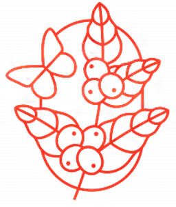

Café 100% Orgánico
Cosechado y procesado por productoras de Oaxaca, con procesos Lavados, Enmielados y Naturales.
Origen Único
De las sierras Norte, Sur, Mazateca y especialidad, con atención a la calidad y frescura.
Compromiso Social
Apoyamos el desarrollo económico y social de las comunidades cafetaleras oaxaqueñas.